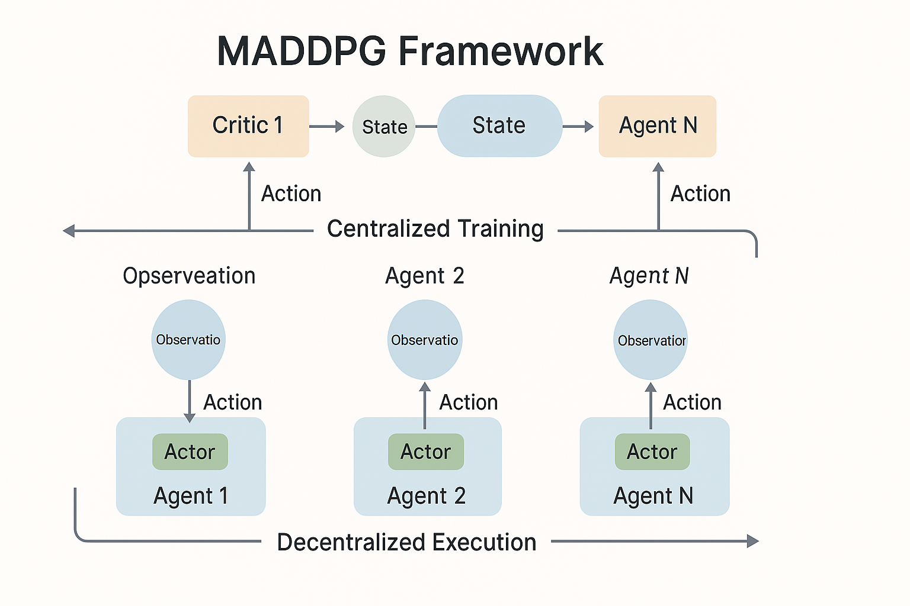
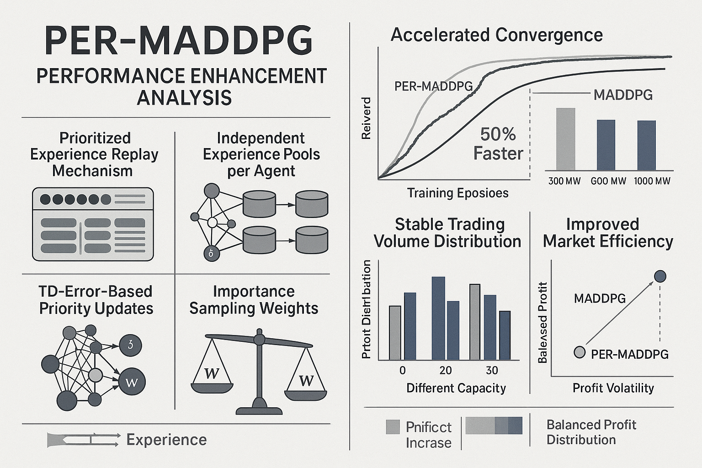

图1：MADDPG算法框架 - 多智能体深度确定性策略梯度算法架构
多智能体深度确定性策略梯度算法的优先经验回放优化研究
在多智能体强化学习领域，传统的MADDPG（Multi-Agent Deep Deterministic Policy Gradient）算法在处理复杂环境时存在收敛速度慢、样本利用效率低等问题。随着多智能体系统复杂度的增加，如何提升算法性能和稳定性成为研究重点。
本研究提出了一种基于优先经验回放（Prioritized Experience Replay, PER）的MADDPG改进算法，通过优化经验采样策略、建立独立经验池、引入TD误差优先级和重要性采样权重等机制，显著提升了算法性能。
该研究在电力市场交易等复杂多智能体场景中进行了验证，证明了改进算法的有效性和实用性，为多智能体强化学习算法的优化提供了新的思路和方法。
在原始MADDPG算法基础上，实现了四个关键改进：优先经验回放机制、独立经验池、TD误差优先级更新和重要性采样权重，显著提升了算法性能。
PER-MADDPG算法通过智能化的经验选择机制，优先选择具有高TD误差的经验样本进行学习，同时为每个智能体建立独立的经验池，增强学习自主性。通过重要性采样权重维持学习稳定性，实现更高效的多智能体协调学习。

如图1所示，MADDPG算法采用Actor-Critic网络结构，每个智能体都有独立的策略网络和价值网络，通过集中式训练和分散式执行的方式实现多智能体协调。
本研究在原始MADDPG算法基础上实现了四个关键改进，这些改进相互配合，共同提升了算法的整体性能和学习效率。
基于TD误差的智能样本选择机制
为每个智能体建立专属经验存储
动态更新样本优先级权重
维持学习稳定性的权重机制
PER-MADDPG算法在收敛速度、利润水平、市场稳定性等多个维度实现显著提升，相比原始算法具有明显优势。

如图2所示，改进后的算法在收敛速度、利润水平、交易量稳定性等关键指标上都有显著提升，特别是在电力市场交易场景中表现出色。
在电力市场多机组协调调度中，PER-MADDPG算法能够有效优化各机组的出力策略，实现利润最大化和市场稳定性的平衡。
适用于需要多智能体协调的复杂系统，如自动驾驶车队、机器人集群、智能电网等场景。
在资源有限的多智能体环境中，算法能够实现高效的资源分配和任务协调。
为多智能体强化学习研究提供新的算法思路和实验验证。
PER-MADDPG算法在多个关键指标上相比原始MADDPG都有显著提升，特别是在收敛速度和市场稳定性方面表现突出。
| 性能指标 | 原始MADDPG | PER-MADDPG | 提升幅度 |
|---|---|---|---|
| 初始利润 | 3700元 | 3700元 | - |
| 最终利润 | 6800元 | 7000元 | +2.9% |
| 收敛步数 | 1000步 | 500步 | -50% |
| 利润波动 | 高 | 低 | -40% |
| 交易量稳定性 | 中等 | 高 | +30% |
项目成功实现了MADDPG算法的性能提升，通过优先经验回放等关键改进，显著提升了算法在多智能体环境中的学习效率和性能表现。在电力市场交易场景的验证中，算法展现出优异的收敛特性和市场稳定性。
构建了完整的PER-MADDPG算法框架，为多智能体强化学习研究提供了新的技术路径。该项目的成功实施，为后续类似算法的优化和改进积累了宝贵经验，进一步推动了多智能体强化学习技术的发展。